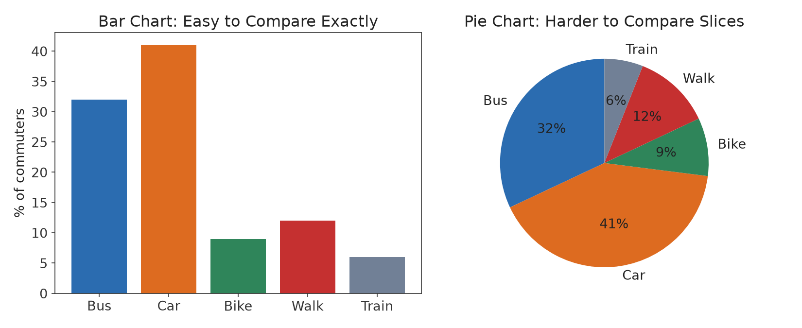
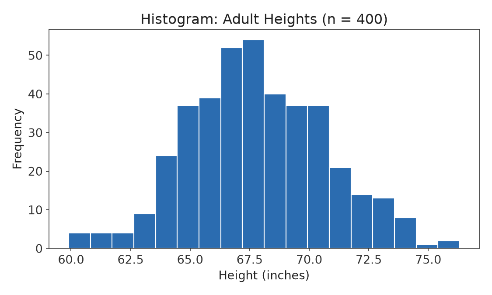
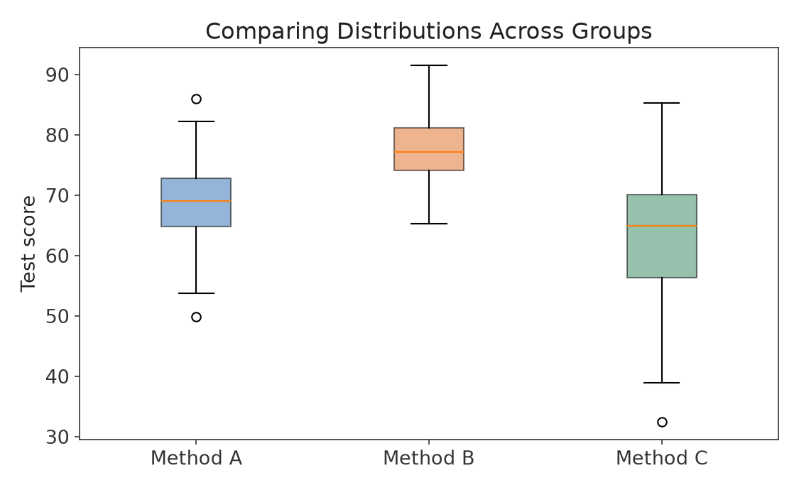
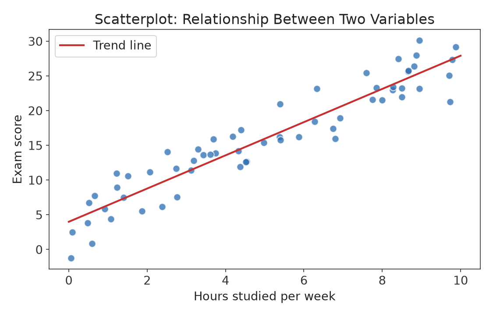
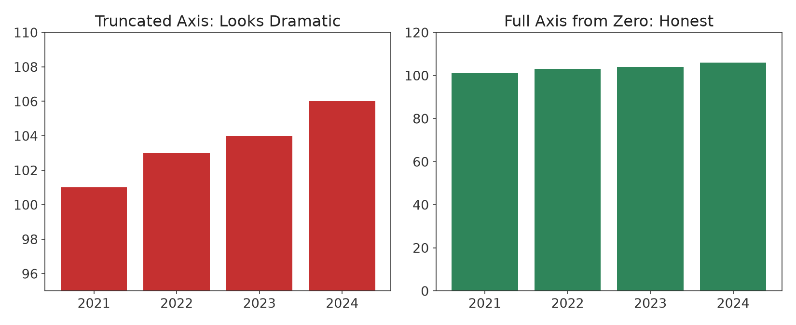

Part I · Descriptive Statistics & Exploratory Data Analysis · Chapter 5
Visualizing Data
A well-designed graph can reveal a pattern — a trend, a cluster, an outlier, a relationship between variables — that a table of numbers hides. A poorly designed (or deliberately misleading) graph can do the opposite. This chapter surveys the standard graphical tools for numerical and categorical data, and develops a critical eye for reading graphs honestly.
5.1 Displaying Categorical Data
Bar charts
A bar chart displays the frequency or relative frequency of each category as a bar; bar height is directly comparable, and categories can be listed in any order (often by frequency, for clarity).
Pie charts
A pie chart shows each category as a slice of a circle proportional to its share of the whole. Pie charts are appropriate only when the categories form a complete, non-overlapping whole (parts of 100%).

Figure 5.1 — The same categorical data shown as a bar chart and a pie chart. Bar charts make it easy to compare categories precisely (is Bike meaningfully different from Walk?); pie charts make the "part of a whole" relationship visually intuitive but make precise comparisons between similarly sized slices difficult.
Common Pitfall
Human perception is much better at comparing the lengths of bars than the areas or angles of pie slices. When more than about five categories are involved, or when several slices are close in size, a bar chart is almost always the more honest and more readable choice. Avoid 3-D pie charts entirely — the perspective distortion makes front slices look larger than equal-sized back slices.
5.2 Displaying Numerical Data: The Histogram
Definition
A histogram divides the range of a numerical variable into consecutive, non-overlapping intervals ("bins") and draws a bar over each bin with height equal to the frequency (or relative frequency) of observations falling in that bin.

Figure 5.2 — A histogram of adult heights. Unlike a bar chart, the bars in a histogram touch, because the underlying variable is continuous and the bins partition its full range.
Unlike a bar chart (used for categorical data, with gaps between bars), a histogram's bars touch because the x-axis represents a continuous scale being sliced into intervals. The choice of bin width matters enormously: too few, wide bins can hide important structure (like a second cluster/mode); too many, narrow bins can make the histogram look noisy and obscure the overall shape. A common starting point is Sturges' rule, which suggests roughly 1 + log₂(n) bins, but in practice it is good habit to try a few bin widths and see which best reveals the underlying pattern without over- or under-smoothing.
Describing the shape of a distribution
When describing a histogram, address three features together: center (where is the data concentrated — use Chapter 3's tools), spread (how variable is the data — use Chapter 4's tools), and shape:
Modality: unimodal (one peak), bimodal (two peaks, often suggesting two underlying subgroups mixed together), or multimodal.
Symmetry: symmetric, right-skewed, or left-skewed (Chapter 3, Figure 3.2).
Outliers: any observations that stand apart from the overall pattern.
5.3 The Stem-and-Leaf Plot
A stem-and-leaf plot is a quick, hand-drawn alternative to a histogram that preserves the actual data values. Each value is split into a "stem" (all digits but the last) and a "leaf" (the last digit); leaves are listed in increasing order next to their shared stem.
Reading sideways, this looks like a (rotated) histogram, but every original data value can still be recovered exactly — a property histograms do not share, since binning discards the exact values.
5.4 The Boxplot, Revisited: Comparing Groups
Chapter 4 introduced the boxplot for a single data set. Its real power shows up when several boxplots are placed side by side, making it easy to compare the center, spread, and skew of multiple groups at a glance.

Figure 5.3 — Side-by-side boxplots comparing test scores across three teaching methods. Method B has both a higher median and less spread than Methods A and C, visible immediately without reading a single table of numbers.
5.5 The Scatterplot: Relationships Between Two Variables
Definition
A scatterplot displays the relationship between two numerical variables by plotting one point per individual, with one variable on the horizontal axis and the other on the vertical axis.

Figure 5.4 — A scatterplot of hours studied versus exam score, with a fitted trend line showing a positive linear association. Correlation and regression, which quantify relationships like this precisely, are developed in Part V.
When examining a scatterplot, describe: direction (does y tend to increase or decrease as x increases?), form (does the pattern look linear, curved, or is there no clear pattern?), strength (how tightly do the points cluster around the pattern?), and any outliers (points that don't follow the overall pattern). By convention, the explanatory variable (Chapter 1) goes on the x-axis and the response variable on the y-axis.
5.6 How Graphs Mislead
Because graphs are processed visually and quickly, they are also an effective way to mislead an inattentive reader, whether by accident or design.

Figure 5.5 — Identical data, two y-axis choices. The truncated axis (left) makes a 5% increase look dramatic; the full axis starting at zero (right) shows the same increase honestly.
Common Pitfall: Reading Graphs Critically
Before trusting a bar chart, check whether the vertical axis starts at zero — truncating it visually exaggerates differences. Before trusting a line graph over time, check whether the x-axis intervals are evenly spaced. Before trusting any graph, check the actual data labels, not just the visual impression, and ask what has been left off the chart entirely (a missing comparison group, a missing time period, a missing "n=").
5.7 Choosing the Right Graph
Goal
Recommended graph
Show frequencies of categories
Bar chart
Show parts of a whole (few categories)
Pie chart (used sparingly) or bar chart
Show the distribution/shape of one numerical variable
Histogram or stem-and-leaf plot
Compare a numerical variable across groups
Side-by-side boxplots
Show the relationship between two numerical variables
Scatterplot
Show change in a numerical variable over time
Line graph, axis starting at zero
Chapter 5 Summary
Categorical data is displayed with bar charts (generally preferred) or pie charts (only for a complete whole, few categories).
Numerical data is displayed with histograms or stem-and-leaf plots; describe shape in terms of center, spread, modality, symmetry, and outliers.
Side-by-side boxplots compare a numerical variable across groups; scatterplots show the relationship between two numerical variables (direction, form, strength, outliers).
Graphs can mislead through truncated axes, inappropriate chart types, or missing context — always read the axis labels and scale before interpreting a graph.
Exercises
A magazine wants to show how its readers' preferred news sources break down across seven categories, including several under 5%. Is a pie chart or a bar chart the better choice here, and why?
Sketch (in words) what a bimodal histogram of adult shoe sizes might look like if the data pooled men and women together, and explain what real-world phenomenon would cause the two modes.
A politician's website shows a bar chart of "crime rate" with a y-axis running from 40 to 45 (instead of 0 to 45), making a change from 41 to 44 look like crime has roughly quadrupled. Explain what is misleading about this and how you would redraw it honestly.
Describe, using the vocabulary of Section 5.5 (direction, form, strength, outliers), what you would expect a scatterplot of "age of a car" (x) versus "resale value" (y) to look like.
You are given a data set of the finishing times of every runner in a city marathon. Which graph from Section 5.7 would you use to (a) see the overall shape of finishing times, and (b) compare finishing times between age divisions? Justify each choice.
Selected Solutions
Exercise 1
A bar chart is the better choice. With seven categories, several small, a pie chart would require reading and comparing many thin slices, which the human eye does poorly; a bar chart makes exact comparisons (including small differences among the under-5% categories) much easier to read.
Exercise 3
Truncating the y-axis at 40 instead of 0 exaggerates the visual size of a small absolute change (41 to 44, an increase of about 7%) into what looks like a near-quadrupling. The honest redraw sets the y-axis to start at 0, so bar heights are proportional to the actual values, matching Figure 5.5's "honest" panel.
Exercise 4
Expect a negative direction (value tends to decrease as age increases), a form that is likely curved rather than perfectly linear (value often drops quickly in the first few years, then levels off), moderate-to-strong strength, with possible outliers for well-maintained classic/collectible cars whose resale value rises with age instead of falling.